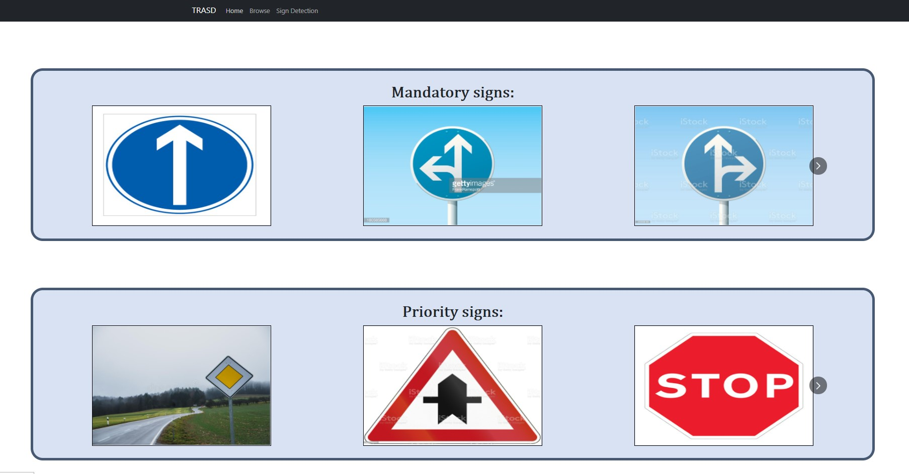
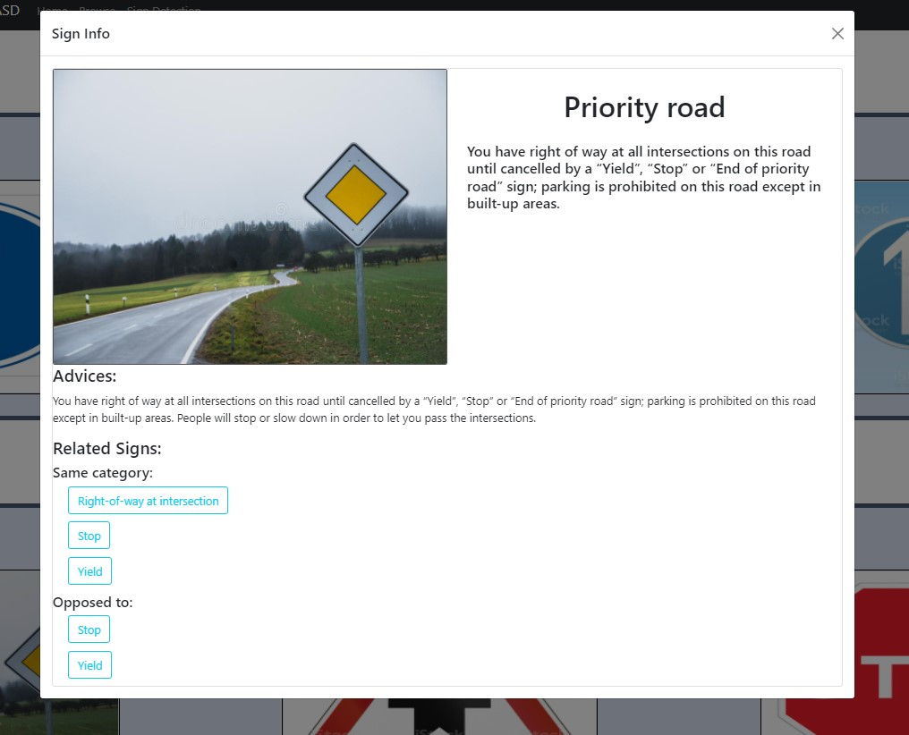
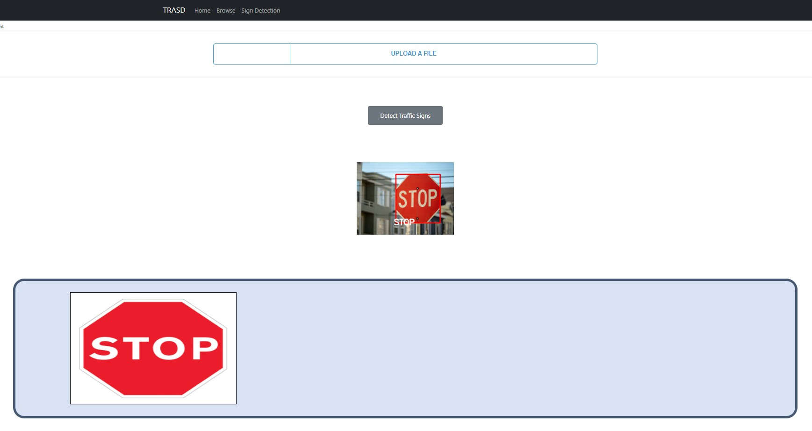

Traffic sign Smart Detector
By clicking on “Sign Detection” on the main navigation bar, the user will be redirected to the Sign Detection page. Here, the user can click on “UPLOAD A FILE” in order to upload a video or a photo. By clicking on “Detect Traffic Signs”, after a short loading time the user will be given the required info:
-
If the file is an image: he will get in return the same image with all identified signs highlighted in red. A slideshow will appear underneath and he can click on each sign in order to get more information about it.
The modal is structured as below:
 -
If the file is a video: he will get in return multiple images, each of them being the frame in which the traffic sign was recognized. The user can click either on the given frames or on the slideshow underneath in order to learn more about the detected sign.
